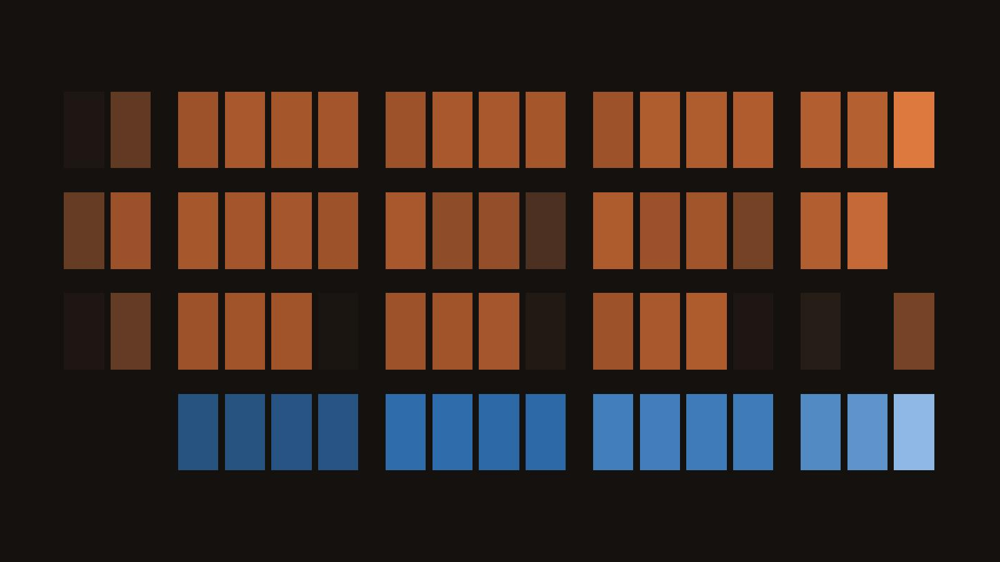
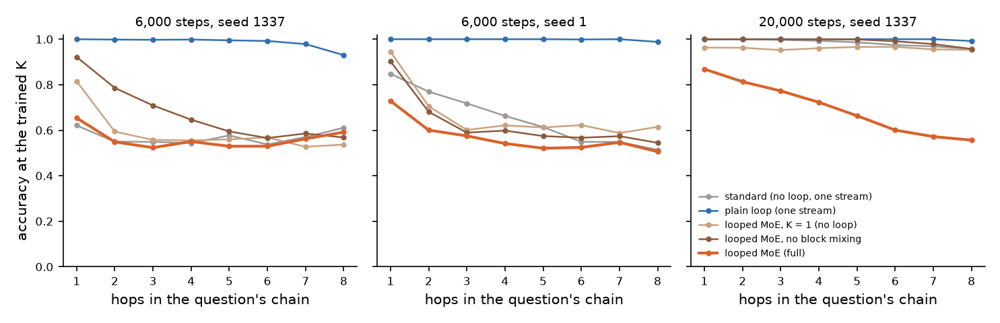
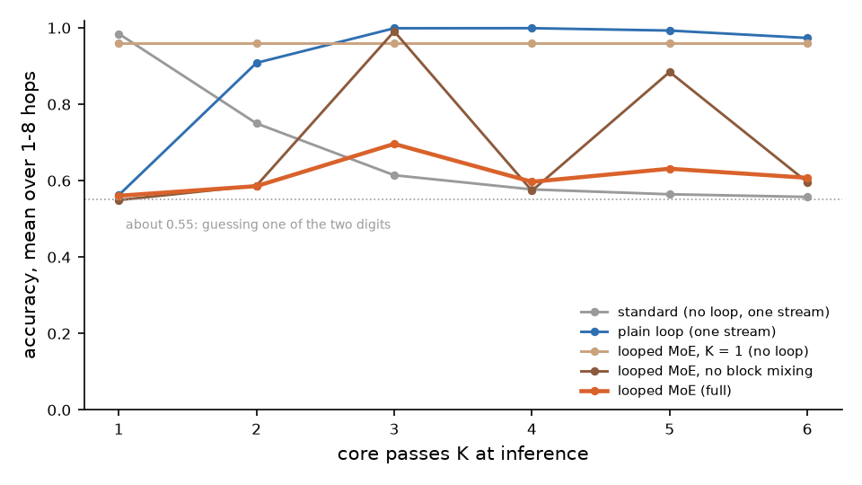
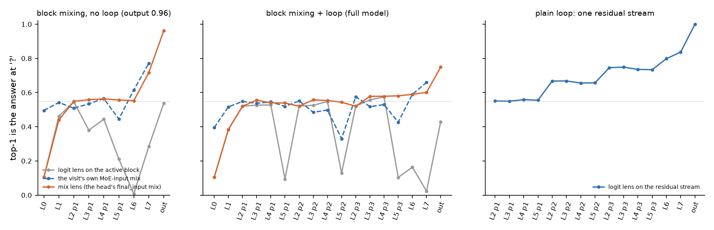
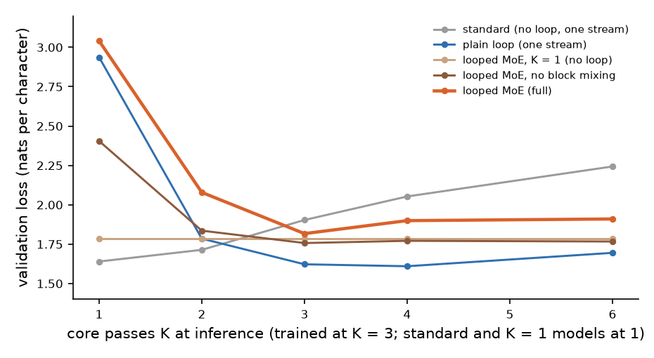

← Research·Model architecture · Episode 4·Experiments·
An Inkling-style looped MoE is the slowest of five toy models to learn, and the plain logit lens misreads it
For anyone reading or building looped models. We rebuilt Inkling 2 Mini's architecture at toy scale from its public code (an Inkling-style model; we are not affiliated with Thinking Machines), trained it beside a plain looped transformer with the same active parameters, and asked two things: does the design learn to use its loop, and which state should a lens read when there is no single residual stream?

make_cover.py from results/.Summary: the short answer and the key results
In short
What is an Inkling-style looped MoE, and how does it compare with a plain looped transformer?
It is a transformer whose middle layers run several times with the same weights, with two twists from Inkling 2 Mini: there is no single residual stream (each layer reads its own learned mix of finished blocks of layers), and every pass restarts from the first block, hearing from the previous pass only through a gated message. At toy scale, on chains of 1-8 links, a plain loop with one stream learned the task in 6,000 steps (0.99 in both seeds). The full Inkling-style model was the slowest of five: 0.56-0.57 at 6,000 steps and 0.70 at 20,000, when every simpler variant had reached 0.96-0.99. Inside a block-mixing model, the plain logit lens on the active block drops to 0.01; each layer's own MoE-input mix is the best read.
Key results
| What we tested | Result | Compared with |
|---|---|---|
| How fast does each design learn chains of 1-8 links? | The full Inkling-style model is slowest. Mean accuracy 0.561 / 0.568 at 6,000 steps (seeds 1337 / 1), 0.696 at 20,000 | Plain loop 0.986 / 0.998 at 6,000. At 20,000: standard 0.985, no-loop MoE 0.960, no-mix loop 0.991 |
| Does the loop add capability here? | Speed, not reach. With 20,000 steps a standard 8-layer model also solves every length (0.96-1.00 per length); at 6,000 it was at 0.57 / 0.65 | Plain loop 0.99-1.00 per length at both budgets |
| Can the pass count change at test time? | Only with a carried stream. Plain loop trained at 3 passes: 0.999 at 4, 0.974 at 6. Restart-plus-message loop: 0.991 at 3, 0.574 at 4, 0.596 at 6 | Standard model forced to loop: 0.985 → 0.558 |
| Can the plain logit lens read a model without one stream? | No. In the block-mixing model (output 0.962) it drops to 0.007 entering layer 6 and reads 0.538 even at the end; the visit's own MoE-input mix reads 0.62-0.77 in the last two layers; the head's mix applied early stays at the 0.55 floor until the last layer | Plain loop: the logit lens climbs pass by pass, 0.55 → 0.67 → 0.75 → 1.00 |
Accuracy: share of 1,000 fixed test puzzles' questions answered right, averaged over chain lengths 1-8. Every prompt holds two digits, so always naming one of them scores about 0.55 (the guessing floor). Two seeds per chain model at 6,000 steps, one at 20,000; one seed per text model.
01Introduction
Ask a model what y holds in z=4;m=5;u=z;k=m;y=k; and it has to look up k, then m, then the digit: three lookups in a row. Our earlier looped transformers did about one lookup per pass. This note builds a model the way Inkling 2 Mini is built and trains it on the same kind of puzzle. After 6,000 steps the plain loop answered almost everything; the Inkling-style model still named one of the prompt's two digits at random, and after 20,000 steps it was the only one of five models that had not learned the task.
What is known. Looping a shared block buys depth without weights (Universal Transformers, recurrent depth), as our earlier notes showed at toy scale (Episode 1, Episode 2). Inkling 2 Mini ships the idea in a 26B mixture of experts with block mixing and gated messages. Our Episode 3 read the released model and found the plain logit lens names its hidden step on 2% of questions inside the loop, and each layer's MoE input the best raw read.
What is missing. A small, readable copy of the whole design, with each part switchable, trained beside a plain loop at matched active parameters, to see what the loop buys and what block mixing and restarts cost; and a toy where we know the answer, to see why lenses struggle without one residual stream.
What this note does. It builds nanoloop-moe, a one-file Inkling-style looped MoE checked against Inkling 2 Mini's public implementation, and a stage-by-stage course that ends in the same file. Contributions:
- An open, tested toy of the architecture, with a list of which details are verified from public code and which are our stand-ins.
- A measurement: at matched active parameters the full design learns slowest, the plain loop fastest, and only the plain loop can change its pass count at test time.
- A toy version of the Looped Lens Challenge question with a known answer: which of the possible states a lens should read when there is no single residual stream.
02Setup
The architecture. Eight layers in four blocks of two: a prelude block, two core blocks run K times with shared weights (K = 3 in training, any K at test), and a coda block. Every layer has attention and a mixture of experts (16 experts, the top 4 per token, a sigmoid router). Each layer's attention reads three learned mixes of the blocks (one each for queries, keys and values), its MoE reads a fourth, and the output head reads a fifth, final_input. Every core pass restarts from the prelude's blocks; from pass 2 on, each core layer reads four messages from the previous pass's core blocks and merges them through a gate:
mix(blocks, active): softmax over blocks of (rms(block) . query) -> weighted average of rms(block)
gate(x, msg): z = down([rms(x), rms(msg)]) # rank 16 (Inkling: 64)
x = (1 - tanh(W_f z)) * x + tanh(W_m z) * msg # W_f, W_m start at zero: gate closedVerified against public code, and what we assumed. We read the Hugging Face transformers implementation (models/inkling2_loop) and the released config.json.
| Part | Inkling 2 Mini (verified) | Here |
|---|---|---|
| Layout | 24 layers, blocks of 6; core = layers 6-17, run 3 times; 48 visits | 8 layers, blocks of 2; a test builds the real layout and checks 48 visits |
| No single residual stream | outputs add only inside the active block; per-sublayer softmax mix over RMS-normalized blocks with a learned query, zero at start | same |
| Mixes per layer | 3 for q/k/v in full-attention layers, 1 for the MoE, plus final_input | 3 in every layer |
| Passes | restart from the prelude's blocks; 4 messages per core layer through learned queries; rank-64 tanh gates, closed at start | same, rank 16 |
| MoE | every layer; 8 of 128 experts; sigmoid router with a selection-only bias; weights renormalized ×8; softcapped SwiGLU; no shared expert | 4 of 16, ×4; shared expert optional, off |
| Load balancing | the router bias exists; how it is trained is not public | Assumed: the auxiliary-loss-free sign update of DeepSeek-V3, rate 0.001 |
| Attention details | local and global layers, learned relative position bias, short convolutions, clipped q/k, gated output | Stand-in: plain causal attention with rotary positions, no convolutions |
| Training | not public in detail (pruned 384 → 128 experts, distilled) | Ours: AdamW 5e-4, clip 1, a hop curriculum |
| Model | What changes | Stored | Active | Role |
|---|---|---|---|---|
loopmoe | the full Inkling-style model, K = 3 | 3,837,824 | 1,478,528 | The model |
loopmoe_k1 | trained and run with one pass (block mixing and MoE kept) | 3,837,824 | 1,478,528 | Ablation: the loop |
loopmoe_nomix | every mix replaced by the plain sum of blocks (exactly a residual stream within a pass); restarts and messages kept | 3,837,824 | 1,478,528 | Ablation: block mixing |
plainloop | one residual stream carried across passes, a dense layer as wide as the MoE's active experts, the prelude output re-added each pass (the nanoloop-transformer recipe) | 1,323,136 | 1,323,136 | Baseline: a plain loop |
standard | the same network run once | 1,323,136 | 1,323,136 | Baseline: no loop |
The MoE models have 12% more active parameters than the dense ones (mixing queries, gates and routers). These ablations and baselines play the role a random-direction control plays in our steering notes: each removes one ingredient so its effect can be read off.
What counts as success, set before the runs:
- The full model beats the standard transformer and its own one-pass version on chains of 4-8 links (it uses its loop).
- It at least matches the plain loop at matched active parameters.
- For the lens: the plain loop's logit lens should rise pass by pass; we ask which of the block-mixing models' three reads does the same.
03How the study was run
- Read the public implementation and the model's config; write the toy and 12 CPU tests (the 48-visit layout, passes restart from the prelude, the gate starts closed, a mix with zero queries is an average and with mixing off is the residual stream, the stacked MoE equals routing token by token).
- Train the five chain models on seed 1337, 6,000 steps of 128 fresh puzzles each, on Modal H100s; score each on 1,000 fixed test puzzles at K = 1-6.
- Train the five text models, 3,000 steps on Tiny Shakespeare; validation loss at K = 1, 2, 3, 4, 6.
- Repeat the chain runs on seed 1, after seeing seed 1337, to check the result was not one bad seed.
- Train all five for 20,000 steps on seed 1337, after seeing that 6,000 steps left four of five models near the floor. Standard and no-loop ran on A10G; plain loop, no-mix and the full model on H100, after the first A10G run of those three was killed midway.
- Run the lens on the 20,000-step checkpoints of the full model, the no-loop block-mixing model and the plain loop: 500 test puzzles, every layer visit.
| Fixed before the runs | Changed after reading results |
|---|---|
| Architecture, the five models, task, test set, learning rate, success tests, the three lens reads | Added a second seed and the 20,000-step runs; added the no-loop model to the lens once it was the only well-trained block-mixing model. Nothing about the models changed. |
Conditions: PyTorch 2.5.1, float32, batch 128, context 96 characters; 6,000-step runs took 2.5-14 minutes per model on an H100. One sign that training is touchy: the killed A10G run of the full model, same seed and code, had reached 6-link chains in its curriculum by step 4,140; the H100 rerun stayed at 5 or fewer through 20,000 steps. The two GPUs' arithmetic differs slightly, and the runs diverged.
04Results
4.1 The plain loop learns first; the full Inkling-style model last
One test puzzle shows what "not learned" looks like: y=7;n=y;r=n;p=5;v=r; then n?y?r?p?v?. At 6,000 steps the plain loop answers 7, 7, 7, 5, 7, all right; the full Inkling-style model answers 5 to every question, right only for p. It has learned to name a digit from the prompt, not to follow the chain (6,000-step samples). At 20,000 steps all five models answer this short puzzle right (20,000-step samples); the difference is on longer chains.
| Model | 6,000 steps, seed 1337 / 1 | 20,000 steps, seed 1337 | 1 link | 4 links | 8 links |
|---|---|---|---|---|---|
| standard | 0.570 / 0.653 | 0.985 | 1.00 | 0.99 | 0.96 |
| plain loop | 0.986 / 0.998 | 0.999 | 1.00 | 1.00 | 0.99 |
| looped MoE, one pass | 0.589 / 0.664 | 0.960 | 0.96 | 0.96 | 0.95 |
| looped MoE, no mixing | 0.672 / 0.629 | 0.991 | 1.00 | 1.00 | 0.96 |
| looped MoE (full) | 0.561 / 0.568 | 0.696 | 0.87 | 0.72 | 0.56 |
Mean accuracy over 1-8 links at each model's trained pass count; the last three columns are the 20,000-step runs. At 6,000 steps only the plain loop had left the 0.55 floor. By 20,000 the standard model, the one-pass MoE and the no-mix loop had caught up (0.96-0.99), and the full model was still falling with chain length, from 0.87 on 1 link to 0.56 on 8 (Figure 2). Success test 2 fails: the full model never matches the plain loop. Test 1 fails too: at 20,000 steps it trails both the standard model and its own one-pass version. Each ingredient alone trains; block mixing and the restarting loop together are what slow it down.

4.2 Here the loop buys learning speed, not reach
A standard 8-layer model with no loop solves every chain length at 20,000 steps (0.96-1.00 per length), so on this task eight layers are deep enough. What the plain loop bought was speed: it reached 0.99 by 6,000 steps in both seeds, when the standard model was at 0.57 and 0.65. Our Episode 2 used a 3-block model, where chains past one pass's reach made the loop necessary; a version of this task with longer chains would be needed to see that here.
4.3 Only a loop that carries its stream can change its pass count
Figure 1 runs each 20,000-step model with 1-6 core passes. The plain loop, trained at 3, also works at 4 (0.999), 5 (0.993) and 6 (0.974). The no-mix loop, whose passes restart and exchange messages, works only at its trained 3 (0.991) and drops to 0.574 at 4 and 0.596 at 6. The full model peaks at 3 (0.696). The one-pass MoE is flat at 0.960 whatever K is: its message gates were never trained, so they stay closed, every pass restarts from the same prelude, and every pass computes the same thing. Inkling 2 Mini also supports only a fixed loop count; its makers released a separate model trained with 1-5 passes for studying different counts.

Accuracy by chain length 1-8 for each model at the chosen number of passes (20,000 steps, seed 1337, 1,000 puzzles); filled = at least 90% right.
Interactive figure: drag the slider to run every model with a different number of core passes.
4.4 Without one residual stream, the plain logit lens reads the wrong state
A logit lens applies the model's final norm and output head to a hidden state early. In the plain loop there is one obvious state to read, the residual stream, and Figure 3 (right) shows it doing what we hoped: about 0.55 through pass 1, 0.67 in pass 2, 0.75 in pass 3, 0.80-0.84 in the coda and 1.00 at the output. A block-mixing model has no such state. We read three, first on the one block-mixing model that learned the task well, the one-pass MoE (output 0.962; Figure 3, left):
- The active block, the read the Looped Lens Challenge starts from: it swings from 0.55 down to 0.007 entering layer 6 and reads 0.538 even after the last layer. Each active block holds only what its own layers added since the last block boundary; the output head never reads it alone.
- The visit's own MoE-input mix: the best read inside the network, 0.62 entering layer 6 and 0.77 entering layer 7.
- The output head's mix applied early (a "mix lens": what the model would say if it stopped here): at the 0.55 floor until the last layer, 0.72 entering layer 7, and by construction exactly the output (0.962) at the end. The head's mix was learned for the end of the network; earlier, it weights blocks that do not yet hold the answer.
The full model (Figure 3, middle; output 0.749) shows the same pattern once per pass: the active-block lens drops to 0.09-0.13 entering layer 5 in every pass (when the active block holds only layer 4's additions), and the mix lens stays at 0.52-0.60 until the end. The same ranking held on the released model in Episode 3: each layer's MoE input was the best untrained read, and the head's own mix was poor mid-loop. Success test 3 is met by the plain loop only.

4.5 On text, the loop does not help at this size
On Tiny Shakespeare (Figure 4, 3,000 steps, one seed), the plain loop at its trained 3 passes (1.622) matches the standard transformer (1.640), as in our earlier notes where text was not depth-hungry. The full looped MoE is worse than both (1.817) and slightly worse than its one-pass version (1.784); the no-mix loop sits between (1.757). Differences under about 0.05 are within what one seed can show.

05Compared with earlier work
| Episode 2: from-scratch loop (0.16M) | This note (1.5M active) | Episode 3: Inkling 2 Mini (3.4B active) | |
|---|---|---|---|
| Plain loop learns the chains | ✓ every seed | ✓ both seeds, fastest of five | n/a |
| Restart + gated message trains reliably | ✗ (2 of 3 seeds, one-gate version) | ✓ without mixing (20,000 steps); ✗ with mixing | ✓ at scale |
| Works at untrained pass counts | ✓ carried stream | ✓ carried stream; ✗ restarts | fixed count only |
| Plain logit lens reads mid-network | ✓ carry-forward; ✗ restart | ✓ plain loop; ✗ block mixing | ✗ (2% inside the loop) |
| Best untrained read without one stream | n/a | each layer's MoE input | each layer's MoE input |
The released model clearly uses its loop and its block mixing, so the gap we see is about scale, data and schedule, which we do not reproduce. What carries over is the reading problem: in both the toy and the real model, a lens has to choose among several states, and the obvious ones (the active block, the head's own mix) are not the best mid-network.
06Implications for AI safety
Looped models move reasoning from visible tokens into repeated passes, and an architecture without a single residual stream has no one place a monitor can read. In our toy the plain logit lens on the active block fell to 0.007 while the model was right 96% of the time, so a monitor built on it would report "nothing here" while the computation was happening. A toy where the answer is known costs a few dollars and shows which state carries it. Before monitoring a model with no single residual stream, name the state the lens reads and check that read on a small replica where the answer is known.
07What this does not show
- That Inkling's design is worse. At 26B parameters, with its data and schedule, it uses its loop. Our result is about a 1.5M-active toy at 6,000-20,000 steps; a warm-up, a per-pass loss or a tuned learning rate might close the gap.
- Seeds. Two seeds per chain model at 6,000 steps, one at 20,000, one per text model. The killed A10G run shows how much one run can vary.
- Mixed hardware at 20,000 steps (A10G for two models, H100 for three). Same code and seed, but the arithmetic differs slightly.
- Depth. At 20,000 steps eight layers were enough for 8-link chains, so this setup cannot show the loop adding reach, only speed.
- Stand-ins. Plain attention with rotary positions instead of Inkling's local/global attention, relative position bias and convolutions; an assumed load-balancing rule.
- The lens reads only top-1 at the question, on one seed, with no fitted lenses.
08Reproduce it
The model, baselines and every mode are one file in nanoloop-moe; build-a-looped-moe builds the same file stage by stage, with tests. In a clone of nanoloop-moe:
python nanoloop_moe.py --mode compare # five chain models, 6,000 steps (or: modal run modal_run.py)
python nanoloop_moe.py --mode compare --seed 1
python nanoloop_moe.py --mode compare --steps 20000
python nanoloop_moe.py --mode compare --task shakespeare --steps 3000
python nanoloop_moe.py --mode lens # reads the chain checkpoints in out/Every number here is in results/, and make_figures.py redraws the figures and prints what it plots (experiments/looped-moe/reproduce.sh --dry-run lists the commands).
09What’s next
- Find what makes block mixing plus restarts trainable at toy scale: a learning-rate warm-up, a loss at every pass, or a gate that starts partly open.
- Lengthen the chains past eight layers' reach (or shrink the model) so the loop has to add depth, not just speed.
- Fit a lens per visit on each of the three reads and test which transfers to Inkling 2 Mini.
10Questions and answers
What is an Inkling-style looped MoE?
A transformer whose middle layers run several times with shared weights, whose feed-forward layers are mixtures of experts, which has no single residual stream (each sublayer reads its own learned mix of finished blocks of layers), and whose passes restart from the first block and pass a gated message to the next. nanoloop-moe is a one-file toy of it.
Is it better than a plain looped transformer?
Not at toy scale in our runs. At matched active parameters a plain loop learned 1-8-link chains in 6,000 steps (0.99); the Inkling-style model reached 0.70 after 20,000, and only the plain loop worked at pass counts it was not trained on.
Why do lenses struggle on a model without a residual stream?
Because there is no single state to read. The active block holds only the current block's additions, each layer reads its own mix, and the head reads another. In our toy the active-block logit lens fell to 0.007 inside a model that was right 96% of the time; each layer's own MoE-input mix read best.
Is this Thinking Machines' code?
No. It is an independent toy written from the public description and the Hugging Face transformers implementation, not affiliated with Thinking Machines, and it shares no weights with Inkling 2 Mini.
AAppendix: data
results/chain_6k_s1337.json,chain_6k_s1.json,chain_20k_s1337.json: per model,paramsandactiveparameter counts,steps,sweep[K][hops](accuracy at K = 1-6 on 1,000 test puzzles, per chain length),acc(the trained K's row) andmean; the 6,000-step files also holdsecondsof training.results/shakespeare_3k_s1337.json: per model, parameter counts andval[K], validation loss at K = 1, 2, 3, 4, 6.results/lens_20k_s1337.json(andlens_6k_s1337.jsonfrom the 6,000-step checkpoints): per model,visits(layer entered and pass), and for block-mixing modelsact_in,mlp_in,mix(top-1 accuracy of each read at the questions, 500 puzzles) andfinal_weights(the head's mix weights over the embedding, prelude, core and coda blocks); for the plain loopact_in, the residual stream.results/examples_6k_s1337.txt,examples_20k_s1337.txt: three sample puzzles with each model's answers.
References and code
- Inkling 2 Mini: release post, model card, implementation in Hugging Face transformers (
models/inkling2_loop). - Opening the box of Inkling 2 Mini using nnsight and NDIF, nnsight blog. The Looped Lens Challenge, NDIF.
- Attention Residuals, arXiv 2603.15031. DenseFormer, arXiv 2402.02622. Hyper-Connections, arXiv 2409.19606.
- Universal Transformers, arXiv 1807.03819. Scaling up Test-Time Compute with Latent Reasoning: A Recurrent Depth Approach, arXiv 2502.05171.
- Outrageously Large Neural Networks, arXiv 1701.06538. Switch Transformers, arXiv 2101.03961. DeepSeekMoE, arXiv 2401.06066. DeepSeek-V3 (sigmoid routing, auxiliary-loss-free balancing), arXiv 2412.19437.
- nanoGPT, karpathy/nanoGPT. Our related code: nanoloop-transformer, build-a-looped-transformer.
- Earlier episodes: Episode 1, Episode 2, Episode 3.
How to cite
@misc{lie2026loopedmoe,
author = {Albert Lie},
title = {An Inkling-style looped MoE is the slowest of five toy models to learn, and the plain logit lens misreads it},
year = {2026},
month = nov,
url = {https://albertlieyingadrian.github.io/steerlab/experiments/looped-moe/report/}
}